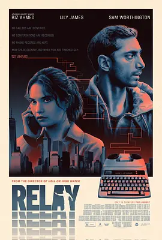

6.7
传话人
Relay
2024
美国
评分 6.7
导演:
大卫·马肯兹
演员:
里兹·阿迈德 / 莉莉·詹姆斯 / 萨姆·沃辛顿 / 薇拉·菲茨杰拉德 / 马修·马希尔
类型:
惊悚
剧情简介
汤姆行事一向谨慎，他以“化解问题”为职业，却始终隐藏在城市的暗面中。他从不留下痕迹，不与客户建立情感联系，也从不逾越自己制定的任何规则。影片开场，他在纽约街头疾行，耳机中传来客户急促的求助声，而他面无表情地穿行于人群，好似与世界隔着一层玻璃。这样的冷静与距离感，是他在高风险环境中存活的核心。某天，一名名叫莎拉的潜在客户闯入他的生活。她声音颤抖、满是恐惧，而她的故事比汤姆以往遇到的都更加复杂：这一次不是解决麻烦，而是保命。莎拉的紧迫与不安逐渐撕开汤姆的职业壁垒，他在调查中不断追踪线索，从光鲜的公司会议室一路深入肮脏的交易网络。越靠近真相，他越意识到背后牵涉的人远比想象中危险。夜色中的街道、废弃仓库里的低声对峙、匿名电话的威胁，让局势愈发逼仄。汤姆开始不得不违背自己严格执行多年的操作准则，而每一次偏移，都像在推动他走向未知的边缘。莎拉的恐惧逐渐成为他无法忽视的责任，他在保护她的过程中，也被迫面对自己长期压抑的脆弱与摇摆。随着追捕与反追捕的节奏交替推进，城市像一座巨大的迷宫，暗处潜伏的力量随时可能让一切崩塌。影片在连串紧绷的行动与心理斗争中，让观众逐步感受到主角身份的危险性，也揭示了金钱交易背后一层层被隐藏的真相与人性裂痕。